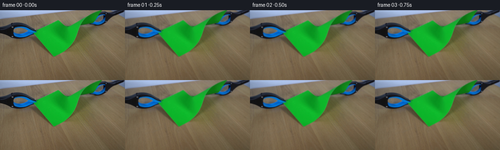

CODING AGENTS AS PIXEL WORLD MODELS
traex/GPT-6-Astra · 0043
点击播放 · 原生 RGB 像素
逐轮保存的候选
回放视频、检查图与代码变化。
每份候选均可单独播放。实际图片检查记录在下方工具轨迹中。
候选 01播放与检查图
点击播放 · 原生 RGB 像素

展开代码变化
--- 上一保存版本
+++ 本次保存版本
@@ -0,0 +1,242 @@
+from pathlib import Path
+import numpy as np
+import cv2
+from scipy import ndimage
+from scipy.interpolate import RBFInterpolator
+from PIL import Image
+import artifact_io
+
+ROOT = Path(__file__).resolve().parent
+H, W = 144, 256
+SCALE = 3
+
+def smoothstep(t):
+ t = np.clip(t, 0.0, 1.0)
+ return t*t*(3-2*t)
+
+def sigmoid(x):
+ return 1/(1+np.exp(-np.clip(x,-40,40)))
+
+def polygon(points):
+ m = np.zeros((H,W), np.uint8)
+ cv2.fillPoly(m, [np.round(points).astype(np.int32)], 1)
+ return m.astype(bool)
+
+def prepare(im):
+ yy, xx = np.mgrid[:H,:W].astype(np.float32)
+ r,g,b = im.transpose(2,0,1)
+ green = (g>r*1.18)&(g>b*1.13)&(g>60)
+ green &= (yy<98)
+ left_roi = (xx<78)&(yy>=24)&(yy<61)
+ right_roi = (xx>=179)&(yy<35)
+ tool = (((b-r)>-10)&((b-g)>-9))|((r<66)&(g<67)&(b<76))
+ left = tool&left_roi&~green
+ right = tool&right_roi&~green
+ # Keep connected objects, not isolated dark grains on the table.
+ def largest(m):
+ labels,n=ndimage.label(m)
+ sizes=np.bincount(labels.ravel());sizes[0]=0
+ return labels==np.argmax(sizes)
+ left=largest(left)
+ right=largest(right)
+ objects=green|left|right
+
+ # Reconstruct only the hidden tabletop. The static background is otherwise
+ # carried straight through from the supplied photograph.
+ sh = polygon([[-4,29],[19,22],[45,22],[64,31],[78,35],
+ [110,16],[126,16],[141,29],[164,16],[194,-3],
+ [259,-3],[259,21],[235,25],[214,38],[204,55],
+ [193,74],[175,84],[151,91],[116,100],[103,95],
+ [87,82],[74,68],[54,68],[22,67],[-4,59]])
+ sh |= ndimage.binary_dilation(objects,iterations=3)
+ # Exclude the pale background above the back edge of the tabletop.
+ horizon=16.8-.112*xx
+ sh &= (yy>horizon+1.4)
+ sh |= ndimage.binary_dilation(objects,iterations=2)
+ table=(r>b+15)&(r>90)&~ndimage.binary_dilation(sh,iterations=3)
+ table &= (yy>horizon+2.5)
+ smooth = cv2.GaussianBlur(im,(0,0),2.0)
+ sample=table&((xx.astype(int)%6)==2)&((yy.astype(int)%5)==2)
+ pts=np.stack([xx[sample]/256,yy[sample]/256],axis=-1)
+ vals=smooth[sample]
+ rbf=RBFInterpolator(pts,vals,kernel='thin_plate_spline',smoothing=.00045)
+ coords=np.stack([xx.ravel()/256,yy.ravel()/256],axis=-1)
+ surface=rbf(coords).reshape(H,W,3).astype(np.float32)
+ # Reuse high-frequency grain from an unobstructed part of the same table.
+ grain=im-cv2.GaussianBlur(im,(0,0),1.4)
+ ty=100+(yy.astype(int)*7+xx.astype(int)//51)%42
+ tx=(xx.astype(int)+79+yy.astype(int)//42*31)%W
+ texture=grain[ty,tx]*.8
+ fitted=np.clip(surface+texture,0,255)
+ zone=cv2.GaussianBlur(sh.astype(np.float32),(0,0),2.8)
+ zone=np.maximum(zone,ndimage.binary_dilation(objects,iterations=2).astype(np.float32))
+ bg=im*(1-zone[...,None])+fitted*zone[...,None]
+
+ # Transport the observed soft shadows along with the moving objects.
+ # Log transmittance lets overlapping penumbras combine without hard seams.
+ density=-np.log(np.clip((im+1)/(bg+1),.2,1.6))
+ unknown=ndimage.binary_dilation(objects,iterations=1).astype(np.uint8)
+ for c in range(3):
+ density[:,:,c]=cv2.inpaint(density[:,:,c].astype(np.float32),unknown,5,cv2.INPAINT_NS)
+ density=np.clip(density,-.2,1.25)
+ # The source photograph supplies the exact exposed shadows; estimates are
+ # used only below the foreground and become visible as the corners move.
+ shadedbg=bg*np.exp(-density)
+
+ def matte(seed,confident):
+ _,near=ndimage.distance_transform_edt(~confident,return_indices=True)
+ fg=im[near[0],near[1]]
+ support=ndimage.binary_dilation(seed,iterations=1)
+ v=fg-shadedbg
+ alpha=np.sum((im-shadedbg)*v,axis=2)/(np.sum(v*v,axis=2)+1e-5)
+ alpha=np.clip(alpha,0,1)*support
+ alpha[confident]=1
+ # Avoid colour-key holes inside continuous dark metal/plastic surfaces.
+ color=(im-(1-alpha[...,None])*shadedbg)/np.maximum(alpha[...,None],.04)
+ color=np.clip(color,0,255)
+ return color.astype(np.float32),alpha.astype(np.float32)
+ psolid=green&(g-r>70)&(g-b>65)
+ paper,pa=matte(green,psolid)
+ lsolid=ndimage.binary_erosion(left,iterations=1)
+ rsolid=ndimage.binary_erosion(right,iterations=1)
+ lsolid |= left&((b-r>35)|(r<38))
+ rsolid |= right&((b-r>35)|(r<38))
+ lc,la=matte(left,lsolid)
+ rc,ra=matte(right,rsolid)
+ # Matte overlap is resolved in favour of the jaws that sit on the paper.
+ pa *= 1-np.maximum(la,ra)
+
+ wl=sigmoid((78-xx)/6)*sigmoid((69-yy)/6)
+ wr=sigmoid((xx-185)/7)*sigmoid((38-yy)/4)*(1-wl)
+ wp=1-wl-wr
+ split=sigmoid((seam(yy-7)+11*(1-yy/100)-xx)/3)
+ densities=[density*wl[...,None],density*wr[...,None],
+ density*(wp*split)[...,None],density*(wp*(1-split))[...,None]]
+ return bg, (paper,pa),(lc,la),(rc,ra),densities
+
+# A short, irregular fibre-scale path starting at the existing upper notch.
+TY=np.array([0,30,32,33,35,37,39,41,43,45,47,49,51,53,55,57,59,61,63,65,67,69,71,73,75,77,79,81,84,100,144],np.float32)
+TX=np.array([138,138,138,138.0,137.8,138.6,137.6,138.0,137.3,137.6,137.0,137.7,138.3,138.0,139.0,138.7,139.5,138.9,138.0,138.6,137.9,138.8,138.0,138.6,137.7,137.1,136.4,136.0,134.9,130,118],np.float32)
+
+def seam(y):
+ return np.interp(y,TY,TX).astype(np.float32)
+
+PULL=np.array([0,.32,.85,1.45,2.25,3.15,4.25,5.7,7.1,8.8,10.6,12.7,15.2,18,20.0,21.4,22.2,22.9,23.3,23.5])
+TIP=np.array([32,32,32,33,36,40,44,49,54,61,68,76,87,104,120,120,120,120,120,120])
+
+def params(frame):
+ a=float(PULL[frame]);tip=float(TIP[frame])
+ if frame<12:
+ theta=float(frame)/12*1.9
+ else:
+ u=(frame-12)/4
+ theta=5.5+3.0*np.exp(-u)*np.sin(u*4.0)
+ # Release causes a small damped flex, not a rigid instantaneous jump.
+ return a,tip,np.deg2rad(theta)
+
+def paper_forward(x,y,side,frame):
+ a,tip,theta=params(frame)
+ sx=seam(y)
+ if side==0:
+ pivotx,pivoty=72.,45.
+ radial=np.clip((sx-x)/np.maximum(sx-pivotx,20),0,1)
+ dx,dy=-a,a*.22
+ angle=theta
+ else:
+ pivotx,pivoty=193.,24.
+ radial=np.clip((x-sx)/np.maximum(pivotx-sx,20),0,1)
+ dx,dy=a,-a*.13
+ angle=-theta*1.08
+ peel=smoothstep((tip-y)/13.)
+ wt=radial+(1-radial)*peel
+ # Local rotation of the freed portion about its gripped corner.
+ ang=angle*peel
+ vx=x-pivotx;vy=y-pivoty
+ rx=(np.cos(ang)-1)*vx-np.sin(ang)*vy
+ ry=np.sin(ang)*vx+(np.cos(ang)-1)*vy
+ active=np.exp(-((y-(tip-7))/14)**2)*np.exp(-((x-sx)/29)**2)
+ flex=.7*np.sin(frame*.95)*min(a/5,1)*active
+ release=max(frame-12,0)
+ flutter=(1.1*np.exp(-release*.38)*np.sin(release*1.7) if frame>=12 else 0)
+ ripple=flutter*np.exp(-abs(x-sx)/30)*np.sin((y-25)*.073)*peel
+ return x+dx*wt+rx, y+dy*wt+ry+flex+ripple
+
+
+def main():
+ im=np.asarray(Image.open(ROOT/'first_frame.png').convert('RGB')).astype(np.float32)
+ bg,paper,left,right,density=prepare(im)
+ hh,ww=H*SCALE,W*SCALE
+ yy,xx=np.mgrid[:hh,:ww].astype(np.float32)
+ xx=(xx+.5)/SCALE-.5;yy=(yy+.5)/SCALE-.5
+
+ def up(a):
+ return cv2.resize(a,(ww,hh),interpolation=cv2.INTER_LINEAR)
+ bgh=up(bg)
+ pc,pa=paper
+ papera=up(pa)
+ paperpm=up(pc*pa[...,None])
+ # Subpixel complementary masks give the two sides precisely matching edges.
+ dist=xx-seam(yy)
+ cutl=np.clip(.5-dist*SCALE,0,1)
+ cutr=1-cutl
+ paper_layers=[]
+ for cut in (cutl,cutr):
+ paper_layers.append(np.dstack([paperpm*cut[...,None],papera*cut]))
+ tool_layers=[]
+ for c,alpha in [left,right]:
+ tool_layers.append(up(np.dstack([c*alpha[...,None],alpha])))
+ densities=[up(d) for d in density]
+
+ def warp(src,x,y):
+ return cv2.remap(src,((x+.5)*SCALE-.5).astype(np.float32),
+ ((y+.5)*SCALE-.5).astype(np.float32),
+ cv2.INTER_LINEAR,borderMode=cv2.BORDER_CONSTANT)
+
+ def inverse(side,frame):
+ # The mildly curved paper map is inverted by fixed-point iterations.
+ u=xx.copy();v=yy.copy()
+ for _ in range(13):
+ x1,y1=paper_forward(u,v,side,frame)
+ u+=(xx-x1)*.85;v+=(yy-y1)*.85
+ return u,v
+
+ def over(base,rgba):
+ return base*(1-rgba[:,:,3:4])+rgba[:,:,:3]
+
+ frames=[im.astype(np.uint8)]
+ for frame in range(1,20):
+ a,tip,theta=params(frame)
+ inv=[inverse(0,frame),inverse(1,frame)]
+ lt=(xx+a,yy-a*.22)
+ rt=(xx-a,yy+a*.13)
+ maps=[lt,rt,inv[0],inv[1]]
+ shadows=np.zeros_like(bgh)
+ for d,(u,v) in zip(densities,maps):
+ shadows+=warp(d,u,v)
+ canvas=bgh*np.exp(-shadows)
+ # Paper retains its original photographed grain, creases and colour.
+ for side in (1,0):
+ u,v=inv[side]
+ layer=warp(paper_layers[side],u,v)
+ d=np.abs(u-seam(v))
+ exposed=smoothstep((tip-v)/9)*smoothstep((v-31)/3)
+ stress=min(a/8,1)*np.exp(-d/17)
+ normal=1+(.045*np.sin(v*.14+frame*.5+side*2.0)*stress*exposed)
+ layer[:,:,:3]*=normal[...,None]
+ # Extremely thin, irregular lighter torn fibres; no drawn outline.
+ edge=np.exp(-(d/.46)**2)*exposed*layer[:,:,3]
+ edge*=np.clip((a-.8)/3,0,1)
+ layer[:,:,:3]+=edge[...,None]*np.array([44,23,34],np.float32)
+ canvas=over(canvas,layer)
+ canvas=over(canvas,warp(tool_layers[0],*lt))
+ canvas=over(canvas,warp(tool_layers[1],*rt))
+ final=cv2.resize(canvas,(W,H),interpolation=cv2.INTER_AREA)
+ frames.append(np.clip(np.rint(final),0,255).astype(np.uint8))
+ frames=np.stack(frames)
+ artifact_io.save(frames,ROOT)
+ np.save(ROOT/'.tmp'/'video_rgb.npy',frames)
+ print('Saved',frames.shape,frames.dtype)
+ print('First frame exact:',np.array_equal(frames[0],im.astype(np.uint8)))
+
+if __name__=='__main__':
+ main()
候选 02播放与检查图
点击播放 · 原生 RGB 像素

展开代码变化
--- 上一保存版本
+++ 本次保存版本
@@ -172,6 +172,10 @@
def up(a):
return cv2.resize(a,(ww,hh),interpolation=cv2.INTER_LINEAR)
bgh=up(bg)
+ # Restore the stationary table's original pixel-scale detail after the
+ # supersampled composite is reduced. This avoids even a slight global
+ # softening of the locked-off photograph in the first animated frame.
+ bg_detail=bg-cv2.resize(bgh,(W,H),interpolation=cv2.INTER_AREA)
pc,pa=paper
papera=up(pa)
paperpm=up(pc*pa[...,None])
@@ -231,6 +235,7 @@
canvas=over(canvas,warp(tool_layers[0],*lt))
canvas=over(canvas,warp(tool_layers[1],*rt))
final=cv2.resize(canvas,(W,H),interpolation=cv2.INTER_AREA)
+ final+=bg_detail
frames.append(np.clip(np.rint(final),0,255).astype(np.uint8))
frames=np.stack(frames)
artifact_io.save(frames,ROOT)
候选 03播放与检查图
可观测工具轨迹
实际执行的命令与返回图片。
命令 1exit 0
/bin/bash -lc 'ls -la && cat prompt.txt && cat GENERATION_RULES.md'
命令 2exit 0
/bin/bash -lc "cat artifact_io.py && python - <<'PY'
from PIL import Image
import numpy as np
im=np.array(Image.open('first_frame.png'))
print(im.shape)
print('bounds',im.min(axis=(0,1)),im.max(axis=(0,1)))
for y in range(0,144,4):
s=''
for x in range(0,256,4):
r,g,b=im[y:y+4,x:x+4].mean((0,1))
if g>r*1.2 and g>b*1.12: c='G'
elif b>r*1.3 and b>g*1.05: c='B'
elif max(r,g,b)<65: c='#'
elif max(r,g,b)<110: c='o'
elif max(r,g,b)<150: c=':'
elif max(r,g,b)<185: c='.'
else:c=' '
s+=c
print(f'{y:03} {s}')
PY"命令 3exit 0
/bin/bash -lc "python - <<'PY'
import numpy as np
from PIL import Image
im=np.asarray(Image.open('first_frame.png')).astype(float)
r,g,b=im.transpose(2,0,1)
m=(g>r*1.18)&(g>b*1.13)&(g>40)
for y in range(0,99,2):
ids=np.where(m[y])[0]; groups=np.split(ids,np.where(np.diff(ids)>1)[0]+1)
print(y,[(int(v[0]),int(v[-1])) for v in groups if len(v)>0])
print('samples')
for y in [0,5,10,20,30,40,50,60,80,100,120,140]:
print(y,[(x,im[y,x].astype(int).tolist()) for x in [0,20,40,60,80,100,120,140,160,180,200,220,240,255]])
PY"命令 4exit 0
/bin/bash -lc "python - <<'PY'
import numpy as np
from PIL import Image
im=np.asarray(Image.open('first_frame.png')).astype(float)
for y in range(0,102,2):
s=''
for x in range(0,256,2):
r,g,b=im[y:y+2,x:x+2].mean((0,1))
if g>r*1.25 and g>b*1.16: c='G'
elif b>r*1.4 and b>g*1.25 and b>75: c='B'
elif b>r*1.15 and b>g*1.05 and b>130:c='~'
elif max(r,g,b)<45:c='#'
elif max(r,g,b)<85:c='o'
elif (r-b)>25 and g>r*.9:c='s'
elif max(r,g,b)<105:c='.'
else:c=' '
s+=c
print(f'{y:03} {s}')
PY"命令 5exit 0
/bin/bash -lc "python - <<'PY'
import numpy as np
from PIL import Image
from scipy import ndimage
im=np.asarray(Image.open('first_frame.png')).astype(float);r,g,b=im.transpose(2,0,1);Y,X=np.mgrid[:144,:256]
for name,roi in [('L',(X<80)&(Y>22)&(Y<59)),('R',(X>169)&(Y<36))]:
m=roi&(((b>r*.96)&(b>g*.94))|((r<69)&(g<72)&(b<75)))
m=ndimage.binary_fill_holes(ndimage.binary_closing(m,iterations=1))
print(name)
for y in range(0,60):
if not m[y].any():continue
ids=np.where(m[y])[0];gg=np.split(ids,np.where(np.diff(ids)>1)[0]+1)
print(y,[(int(v[0]),int(v[-1])) for v in gg if len(v)])
print('modules')
import cv2, scipy
print(cv2.__version__,scipy.__version__)
PY"命令 6exit 0
/bin/bash -lc "python - <<'PY'
from PIL import Image
import numpy as np
im=np.asarray(Image.open('first_frame.png')).astype(float)
# Detailed narrow central region RGB values used for boundary/surface estimates.
for y in range(18,49,2):
print('y',y, ' '.join(f'{x}:{tuple(im[y,x].astype(int))}' for x in range(116,145,2)))
# Colour-class tool maps at native pixels: B blue, # black, G green, space background.
for name,(x1,y1,x2,y2) in [('left',(0,22,80,60)),('right',(175,0,256,35))]:
print(name)
for y in range(y1,y2):
s=''
for x in range(x1,x2):
r,g,b=im[y,x]
if g>r*1.18 and g>b*1.13:c='G'
elif b>r*1.4 and b>g*1.18 and b>70:c='B'
elif max(r,g,b)<52:c='#'
elif b>g*1.05 and b>r*1.05:c='b'
elif max(r,g,b)<95:c='o'
else:c=' '
s+=c
print(f'{y:02} {s}')
PY"命令 7exit 0
/bin/bash -lc "cat > generate.py <<'PY'
from pathlib import Path
import numpy as np
import cv2
from scipy import ndimage
from scipy.interpolate import RBFInterpolator
from PIL import Image
import artifact_io
ROOT = Path(__file__).resolve().parent
H, W = 144, 256
SCALE = 3
def smoothstep(t):
t = np.clip(t, 0.0, 1.0)
return t*t*(3-2*t)
def sigmoid(x):
return 1/(1+np.exp(-np.clip(x,-40,40)))
def polygon(points):
m = np.zeros((H,W), np.uint8)
cv2.fillPoly(m, [np.round(points).astype(np.int32)], 1)
return m.astype(bool)
def prepare(im):
yy, xx = np.mgrid[:H,:W].astype(np.float32)
r,g,b = im.transpose(2,0,1)
green = (g>r*1.18)&(g>b*1.13)&(g>60)
green &= (yy<98)
left_roi = (xx<78)&(yy>=24)&(yy<61)
right_roi = (xx>=179)&(yy<35)
tool = (((b-r)>-10)&((b-g)>-9))|((r<66)&(g<67)&(b<76))
left = tool&left_roi&~green
right = tool&right_roi&~green
# Keep connected objects, not isolated dark grains on the table.
def largest(m):
labels,n=ndimage.label(m)
sizes=np.bincount(labels.ravel());sizes[0]=0
return labels==np.argmax(sizes)
left=largest(left)
right=largest(right)
objects=green|left|right
# Reconstruct only the hidden tabletop. The static background is otherwise
# carried straight through from the supplied photograph.
sh = polygon([[-4,29],[19,22],[45,22],[64,31],[78,35],
[110,16],[126,16],[141,29],[164,16],[194,-3],
[259,-3],[259,21],[235,25],[214,38],[204,55],
[193,74],[175,84],[151,91],[116,100],[103,95],
[87,82],[74,68],[54,68],[22,67],[-4,59]])
sh |= ndimage.binary_dilation(objects,iterations=3)
# Exclude the pale background above the back edge of the tabletop.
horizon=16.8-.112*xx
sh &= (yy>horizon+1.4)
sh |= ndimage.binary_dilation(objects,iterations=2)
table=(r>b+15)&(r>90)&~ndimage.binary_dilation(sh,iterations=3)
table &= (yy>horizon+2.5)
smooth = cv2.GaussianBlur(im,(0,0),2.0)
sample=table&((xx.astype(int)%6)==2)&((yy.astype(int)%5)==2)
pts=np.stack([xx[sample]/256,yy[sample]/256],axis=-1)
vals=smooth[sample]
rbf=RBFInterpolator(pts,vals,kernel='thin_plate_spline',smoothing=.00045)
coords=np.stack([xx.ravel()/256,yy.ravel()/256],axis=-1)
surface=rbf(coords).reshape(H,W,3).astype(np.float32)
# Reuse high-frequency grain from an unobstructed part of the same table.
grain=im-cv2.GaussianBlur(im,(0,0),1.4)
ty=100+(yy.astype(int)*7+xx.astype(int)//51)%42
tx=(xx.astype(int)+79+yy.astype(int)//42*31)%W
texture=grain[ty,tx]*.8
fitted=np.clip(surface+texture,0,255)
zone=cv2.GaussianBlur(sh.astype(np.float32),(0,0),2.8)
zone=np.maximum(zone,ndimage.binary_dilation(objects,iterations=2).astype(np.float32))
bg=im*(1-zone[...,None])+fitted*zone[...,None]
# Transport the observed soft shadows along with the moving objects.
# Log transmittance lets overlapping penumbras combine without hard seams.
density=-np.log(np.clip((im+1)/(bg+1),.2,1.6))
unknown=ndimage.binary_dilation(objects,iterations=1).astype(np.uint8)
for c in range(3):
density[:,:,c]=cv2.inpaint(density[:,:,c].astype(np.float32),unknown,5,cv2.INPAINT_NS)
density=np.clip(density,-.2,1.25)
# The source photograph supplies the exact exposed shadows; estimates are
# used only below the foreground and become visible as the corners move.
shadedbg=bg*np.exp(-density)
def matte(seed,confident):
_,near=ndimage.distance_transform_edt(~confident,return_indices=True)
fg=im[near[0],near[1]]
support=ndimage.binary_dilation(seed,iterations=1)
v=fg-shadedbg
alpha=np.sum((im-shadedbg)*v,axis=2)/(np.sum(v*v,axis=2)+1e-5)
alpha=np.clip(alpha,0,1)*support
alpha[confident]=1
# Avoid colour-key holes inside continuous dark metal/plastic surfaces.
color=(im-(1-alpha[...,None])*shadedbg)/np.maximum(alpha[...,None],.04)
color=np.clip(color,0,255)
return color.astype(np.float32),alpha.astype(np.float32)
psolid=green&(g-r>70)&(g-b>65)
paper,pa=matte(green,psolid)
lsolid=ndimage.binary_erosion(left,iterations=1)
rsolid=ndimage.binary_erosion(right,iterations=1)
lsolid |= left&((b-r>35)|(r<38))
rsolid |= right&((b-r>35)|(r<38))
lc,la=matte(left,lsolid)
rc,ra=matte(right,rsolid)
# Matte overlap is resolved in favour of the jaws that sit on the paper.
pa *= 1-np.maximum(la,ra)
wl=sigmoid((78-xx)/6)*sigmoid((69-yy)/6)
wr=sigmoid((xx-185)/7)*sigmoid((38-yy)/4)*(1-wl)
wp=1-wl-wr
split=sigmoid((seam(yy-7)+11*(1-yy/100)-xx)/3)
densities=[density*wl[...,None],density*wr[...,None],
density*(wp*split)[...,None],density*(wp*(1-split))[...,None]]
return bg, (paper,pa),(lc,la),(rc,ra),densities
# A short, irregular fibre-scale path starting at the existing upper notch.
TY=np.array([0,30,32,33,35,37,39,41,43,45,47,49,51,53,55,57,59,61,63,65,67,69,71,73,75,77,79,81,84,100,144],np.float32)
TX=np.array([138,138,138,138.0,137.8,138.6,137.6,138.0,137.3,137.6,137.0,137.7,138.3,138.0,139.0,138.7,139.5,138.9,138.0,138.6,137.9,138.8,138.0,138.6,137.7,137.1,136.4,136.0,134.9,130,118],np.float32)
def seam(y):
return np.interp(y,TY,TX).astype(np.float32)
PULL=np.array([0,.32,.85,1.45,2.25,3.15,4.25,5.7,7.1,8.8,10.6,12.7,15.2,18,20.0,21.4,22.2,22.9,23.3,23.5])
TIP=np.array([32,32,32,33,36,40,44,49,54,61,68,76,87,104,120,120,120,120,120,120])
def params(frame):
a=float(PULL[frame]);tip=float(TIP[frame])
if frame<12:
theta=float(frame)/12*1.9
else:
u=(frame-12)/4
theta=5.5+3.0*np.exp(-u)*np.sin(u*4.0)
# Release causes a small damped flex, not a rigid instantaneous jump.
return a,tip,np.deg2rad(theta)
def paper_forward(x,y,side,frame):
a,tip,theta=params(frame)
sx=seam(y)
if side==0:
pivotx,pivoty=72.,45.
radial=np.clip((sx-x)/np.maximum(sx-pivotx,20),0,1)
dx,dy=-a,a*.22
angle=theta
else:
pivotx,pivoty=193.,24.
radial=np.clip((x-sx)/np.maximum(pivotx-sx,20),0,1)
dx,dy=a,-a*.13
angle=-theta*1.08
peel=smoothstep((tip-y)/13.)
wt=radial+(1-radial)*peel
# Local rotation of the freed portion about its gripped corner.
ang=angle*peel
vx=x-pivotx;vy=y-pivoty
rx=(np.cos(ang)-1)*vx-np.sin(ang)*vy
ry=np.sin(ang)*vx+(np.cos(ang)-1)*vy
active=np.exp(-((y-(tip-7))/14)**2)*np.exp(-((x-sx)/29)**2)
flex=.7*np.sin(frame*.95)*min(a/5,1)*active
release=max(frame-12,0)
flutter=(1.1*np.exp(-release*.38)*np.sin(release*1.7) if frame>=12 else 0)
ripple=flutter*np.exp(-abs(x-sx)/30)*np.sin((y-25)*.073)*peel
return x+dx*wt+rx, y+dy*wt+ry+flex+ripple
def main():
im=np.asarray(Image.open(ROOT/'first_frame.png').convert('RGB')).astype(np.float32)
bg,paper,left,right,density=prepare(im)
hh,ww=H*SCALE,W*SCALE
yy,xx=np.mgrid[:hh,:ww].astype(np.float32)
xx=(xx+.5)/SCALE-.5;yy=(yy+.5)/SCALE-.5
def up(a):
return cv2.resize(a,(ww,hh),interpolation=cv2.INTER_LINEAR)
bgh=up(bg)
pc,pa=paper
papera=up(pa)
paperpm=up(pc*pa[...,None])
# Subpixel complementary masks give the two sides precisely matching edges.
dist=xx-seam(yy)
cutl=np.clip(.5-dist*SCALE,0,1)
cutr=1-cutl
paper_layers=[]
for cut in (cutl,cutr):
paper_layers.append(np.dstack([paperpm*cut[...,None],papera*cut]))
tool_layers=[]
for c,alpha in [left,right]:
tool_layers.append(up(np.dstack([c*alpha[...,None],alpha])))
densities=[up(d) for d in density]
def warp(src,x,y):
return cv2.remap(src,((x+.5)*SCALE-.5).astype(np.float32),
((y+.5)*SCALE-.5).astype(np.float32),
cv2.INTER_LINEAR,borderMode=cv2.BORDER_CONSTANT)
def inverse(side,frame):
# The mildly curved paper map is inverted by fixed-point iterations.
u=xx.copy();v=yy.copy()
for _ in range(13):
x1,y1=paper_forward(u,v,side,frame)
u+=(xx-x1)*.85;v+=(yy-y1)*.85
return u,v
def over(base,rgba):
return base*(1-rgba[:,:,3:4])+rgba[:,:,:3]
frames=[im.astype(np.uint8)]
for frame in range(1,20):
a,tip,theta=params(frame)
inv=[inverse(0,frame),inverse(1,frame)]
lt=(xx+a,yy-a*.22)
rt=(xx-a,yy+a*.13)
maps=[lt,rt,inv[0],inv[1]]
shadows=np.zeros_like(bgh)
for d,(u,v) in zip(densities,maps):
shadows+=warp(d,u,v)
canvas=bgh*np.exp(-shadows)
# Paper retains its original photographed grain, creases and colour.
for side in (1,0):
u,v=inv[side]
layer=warp(paper_layers[side],u,v)
d=np.abs(u-seam(v))
exposed=smoothstep((tip-v)/9)*smoothstep((v-31)/3)
stress=min(a/8,1)*np.exp(-d/17)
normal=1+(.045*np.sin(v*.14+frame*.5+side*2.0)*stress*exposed)
layer[:,:,:3]*=normal[...,None]
# Extremely thin, irregular lighter torn fibres; no drawn outline.
edge=np.exp(-(d/.46)**2)*exposed*layer[:,:,3]
edge*=np.clip((a-.8)/3,0,1)
layer[:,:,:3]+=edge[...,None]*np.array([44,23,34],np.float32)
canvas=over(canvas,layer)
canvas=over(canvas,warp(tool_layers[0],*lt))
canvas=over(canvas,warp(tool_layers[1],*rt))
final=cv2.resize(canvas,(W,H),interpolation=cv2.INTER_AREA)
frames.append(np.clip(np.rint(final),0,255).astype(np.uint8))
frames=np.stack(frames)
artifact_io.save(frames,ROOT)
np.save(ROOT/'.tmp'/'video_rgb.npy',frames)
print('Saved',frames.shape,frames.dtype)
print('First frame exact:',np.array_equal(frames[0],im.astype(np.uint8)))
if __name__=='__main__':
main()
PY
python generate.py"命令 8exit 0
/bin/bash -lc "python - <<'PY'
import numpy as np
from PIL import Image
import generate
v=np.load('.tmp/video_rgb.npy')
print('Frame differences')
for i in range(1,20):
a=abs(v[i].astype(float)-v[i-1].astype(float))
r,g,b=v[i].transpose(2,0,1).astype(float)
mask=(g>r*1.3)&(g>b*1.2)
from scipy.ndimage import label
lab,n=label(mask);s=np.bincount(lab.ravel());s[0]=0
print(i,'mae',a.mean().round(2),'max',a.max(),'green',mask.sum(),'parts',sorted(s[s>25],reverse=True))
for i in [1,6,10,13,19]:
im=v[i].astype(float)
print('FRAME',i)
for y in range(0,110,3):
s=''
for x in range(0,256,3):
r,g,b=im[y:y+3,x:x+3].mean((0,1))
if g>r*1.3 and g>b*1.2:c='G'
elif b>r*1.4 and b>g*1.18 and b>70:c='B'
elif max(r,g,b)<52:c='#'
elif b>g*1.05 and b>r*1.05:c='~'
elif max(r,g,b)<95:c='o'
else:c=' '
s+=c
print(f'{y:03} {s}')
# Reconstruct frame zero using composition to test continuity apart from true motion
im=v[0].astype(np.float32);bg,(pc,pa),(lc,la),(rc,ra),ds=generate.prepare(im)
re=bg*np.exp(-sum(ds))
for c,a in [(pc,pa),(lc,la),(rc,ra)]:re=re*(1-a[...,None])+c*a[...,None]
err=abs(re-im)
print('Reconstruction MAE',err.mean(), 'MAE foreground',err[:100].mean(), '99q',np.quantile(err,.99))
print('Colors background',[(tuple(p),tuple(v[0,p[0],p[1]]),tuple(v[19,p[0],p[1]])) for p in [(40,130),(50,130),(60,130),(45,66),(60,25),(75,180),(100,150),(20,240)]])
PY"命令 9exit 0
/bin/bash -lc "python - <<'PY'
from PIL import Image
import numpy as np
import generate,cv2
im=np.array(Image.open('first_frame.png')).astype(np.float32)
bg,*_=generate.prepare(im)
y,x=np.mgrid[:144,:256]
r,g,b=im.transpose(2,0,1)
print('unmoved background drift')
v=np.load('.tmp/video_rgb.npy')
print('bottom',np.abs(v[1,110:].astype(float)-v[0,110:]).mean())
print('upper left',np.abs(v[1,:16,:100].astype(float)-v[0,:16,:100]).mean())
print('files')
from pathlib import Path
for f in ['pixels.npz','index.html','generate.py','frames/00.png','frames/19.png']:
print(f,Path(f).stat().st_size)
PY"命令 10exit 0
/bin/bash -lc "python generate.py && python - <<'PY'
from PIL import Image
import numpy as np
v=np.load('.tmp/video_rgb.npy')
assert v.shape==(20,144,256,3) and v.dtype==np.uint8
assert np.array_equal(v[0],np.asarray(Image.open('first_frame.png')))
p=np.load('pixels.npz')['pixels'];print('Packed output:',p.shape)
print('Static bottom background absolute RGB difference:',np.abs(v[-1,110:].astype(float)-v[0,110:]).mean())
PY"保存候选 3 份；完成命令 10 次；可验证图片返回 0 张。原始 API 响应与完整日志保留在本地。